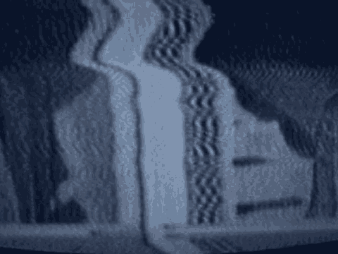

22 is a clear passageway.
23 THE WITNESS: Exactly.
24 THE COURT: What I am trying to find out is what your
25 line of sight was, especially your line of sight of the floor.
7647
1 THE WITNESS: My line of sight, obviously it is clear
2 from the diagram I certainly couldn't see anything around the
3 corner sort of going toward the right of the diagram, but I
4 became aware of the guards and the person who I thought was
5 Mr. Salim once they rounded the corner because Mr. Salim was
6 being dragged, once he cleared the corner, was actually being
7 dragged in our direction, Mr. Adler's and I. In fact, he was
8 ultimately dragged beyond us.
9 THE COURT: You recall he was dragged, looking at
10 this diagram, to the right or the left of the column, if you
11 remember?
12 THE WITNESS: I, truly I don't for sure, but I think
13 it was between the -- I think it was to the right of the
14 column as we look at the diagram, but I'm not 100 percent sure
15 of that.
16 THE COURT: Now, there is no exit, is there, as you
17 go in that direction?
18 THE WITNESS: There is a door -- the answer is I'm
19 certainly not aware of an exit, no.
20 THE COURT: Are there going to be any pictures or
21 anything which is going to clarify this?
22 MR. RUHNKE: Your Honor, if you like, I have a
23 photograph here which I think could answer every question,
24 which I will show to Mr. McAllister when the jury returns as
25 an additional exhibit.
7648
1 MR. GARCIA: Your Honor, the government intends to
2 offer the photo he is holding through the next witness.
3 THE COURT: Through the next witness?
4 Maybe I should be more patient, but I just confess
5 that at the present moment I have a number of questions as to
1